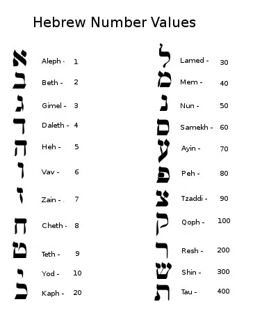

5 Apr. 2018
Mysticism
先是 Night 的视频、卡巴拉、斐波那契数列......最近历史学犹太教了终于决定译一波，但由于数学太渣（被关进监狱）好多规律没找出来
在这里感谢Hankin, Maxwell和Trey的启蒙和帮助（尤其锤哥）
【希伯来字母的一些神奇的东西】
（文中出现的所有希词皆为从右往左书写）
希伯来字母一共22个，每个对应不同数字（下图）
把组成“父亲”אבא和“母亲”אמא末尾的א去掉，相加等于44。“孩子”ילד的字母相加也等于44
所以可以理解为父亲+母亲=孩子
Jehovah耶和华（יהוה）的字母相加为26，这个数字正好处于25（平方5*5）和27（立方3*3*3）中间。可理解为创造世界者不受二维与三维的约束，因为26是25和27中唯一的正整数。
26也可以拆为13+13
其中אחד“唯一”是13；אהבה“爱”也是13
26即为“one love”
和斐波那契数列的...巧合【太多没找出来实在是太抱歉了……】
首先了解一下斐波那契数列（兔子数列或黄金分割）：F=1,1,2,3,5,8,21......10946。规则就是从第三项开始 前两数相加得第三个数
希伯来首字母א，中字母נ和末字母ת相加（1+21+400）=421，与26相乘等于10946（斐波那契数列第二十一个数）
以下首中末字母，左为表示的数字；右为拼出来的数字
ת“Tav” = 400, תאר拼出后 =407
נ“Kaf” = 20, נפ拼出后 = 100
א“Aleph” = 1, אלפ拼出后=111
(421) (618)
618黄金分割比
618-421=197
197*3.14（π）=618.5【欢迎回来】
为什么是π？其实只有这三位一样。希伯来末字母是כ，排名第22，22/21再乘3=3.14【后面不是圆周率各位不用算了】，（10946正好是第21个斐波那契数）。（22/21）*3化为分数=22/7，你的头部有22块骨头，颈部有7块椎骨。
Enjoy.